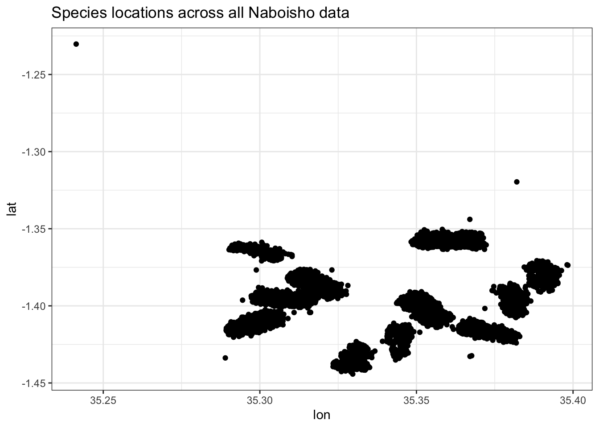
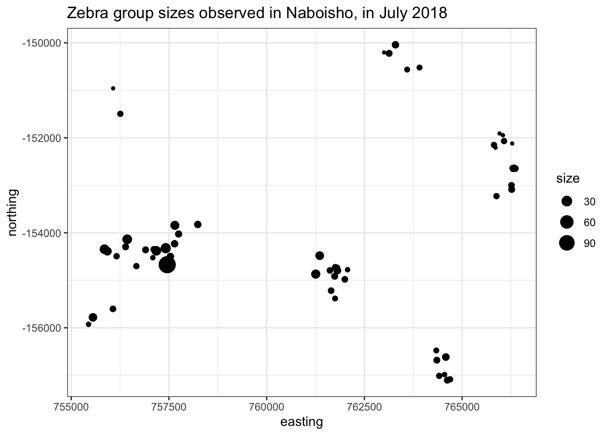
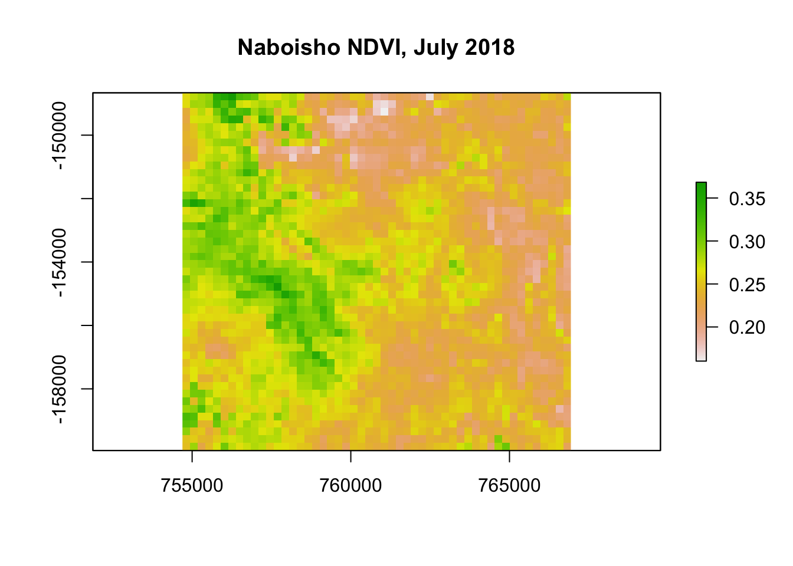
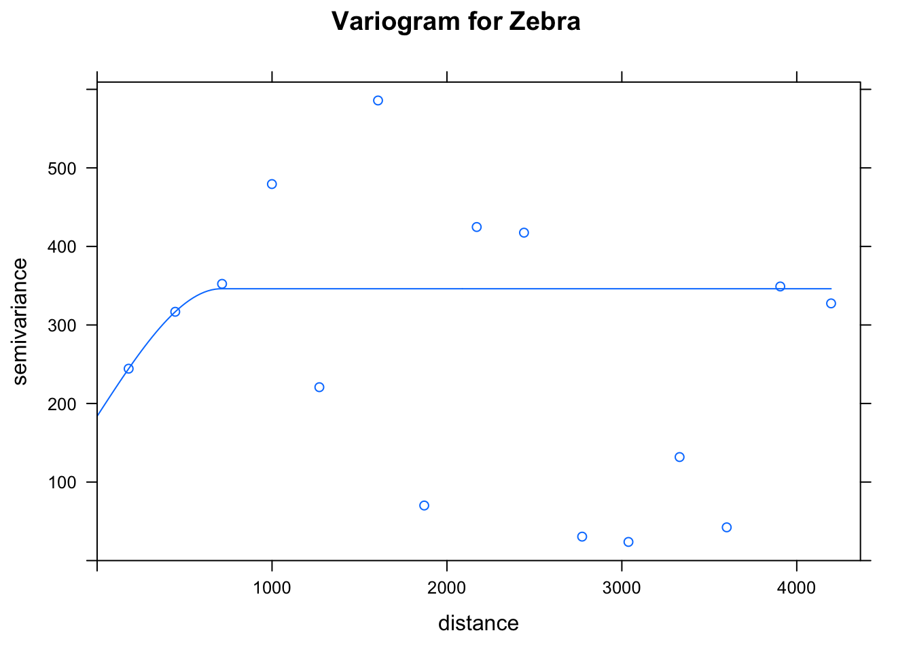
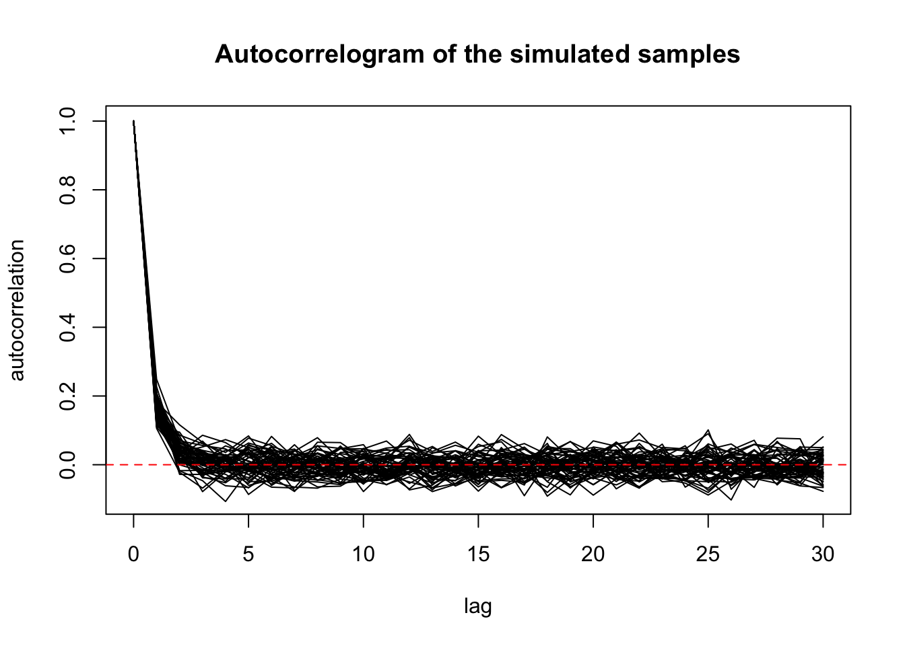
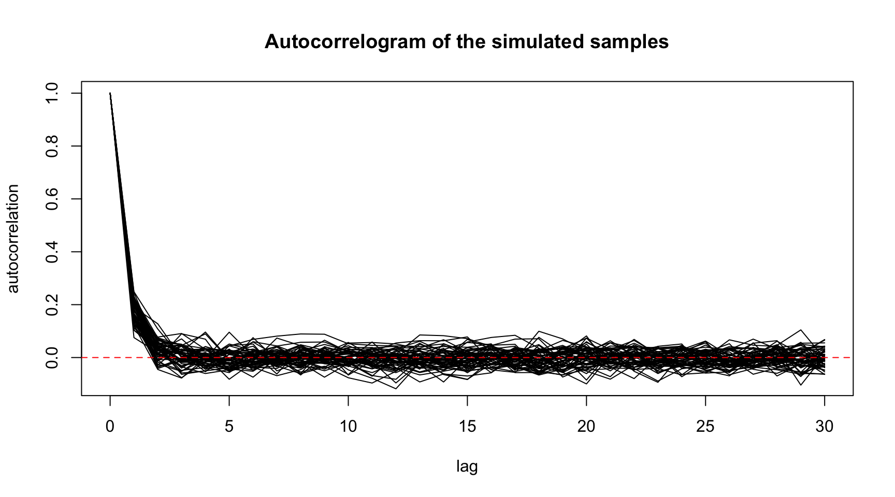
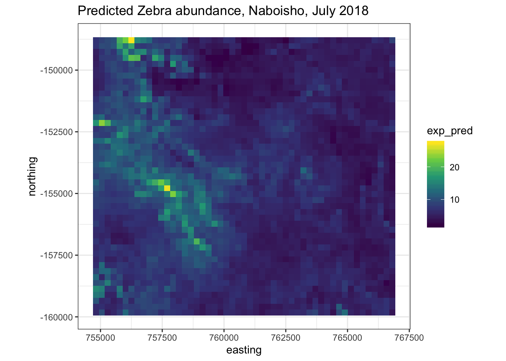

Geostatistics is a class of statistics used to analyze and predict the values associated with spatial or spatiotemporal phenomena. It incorporates the spatial (and in some cases temporal) coordinates of the data within the analyses. Geostatistics attempts to fit a stochastic model to the known location of a phenomenon and associated covariates, inorder to
Here we use a dataset of species observation locations within the Naboisho conservancy in Kenya. In this example we will model the distribution of Zebra abudaance using geostatistical techniques.
# Load libraries
library(tidyr)
library(dplyr)
library(sf)
library(ggplot2)
library(geosphere)
library(lwgeom)
library(PrevMap)
library(raster)
# Set filename of raw csv to load
rm(list = ls())
setwd("/Users/anthony/Documents/GitHub/ComputationalEcology/")
survey <- readRDS("data_analysis_files/naboisho/clean_survey.RData")# Add sf POINTs to dataframe for coords
survey <- survey %>%
# Remove observations with no long, lat data
filter(!is.na(lat) & !is.na(long)) %>%
# Create sf points with WGS84
st_as_sf(coords = c("long", "lat"), crs = 4326, remove = F)
# Plot overall data set
survey %>%
ggplot() +
geom_point(aes(x=long, y=lat)) +
facet_wrap(~transect, scale = "free") +
theme_bw()Now we need to generate the coordinates of all species, given the observer location (long, lat), distance between species and observer and bearing
species_locations <- geosphere::destPoint(
# drop sf geometry and select vector of observer locations
p = survey %>% st_drop_geometry() %>% dplyr::select(long,lat),
# vector of bearings from observer to observations
b = survey$Compass.Bearing,
# vector of distance in meters between observer and observation
d = survey$Distance..m.) %>%
# Convert new destinations to a dataframe
as.data.frame() %>%
# Create sf point from species location
st_as_sf(coords = c('lon', 'lat'), crs = 4326, remove = F) %>%
# Project into planar coordinates for Kenya
st_transform(32636) %>%
# Bind with relevant survey data
cbind(
survey %>% dplyr::select(size, Region.Label, transect, species, year, month)) %>%
distinct(.keep_all=T)
# Add Easting/Northing references to datframe
species_locations <- species_locations %>%
st_coordinates() %>%
cbind(species_locations) %>%
rename (easting = X,
northing = Y) %>%
st_drop_geometry()
# Plot all species locations
species_locations %>%
ggplot() +
geom_point(aes(x=lon, y=lat)) +
theme_bw()
Looks like we have a few outliers, so let’s remove them.
# Remove the outlier
species_locations <- species_locations %>%
filter(lat < -1.325) %>%
# Remove species marked as None
filter(species != "None")
#Replot
species_locations %>%
ggplot() +
geom_point(aes(x=lon, y=lat)) +
theme_bw() +
facet_wrap(~species)# Generate bounding box for Naboisho in WGS84
naboisho_bbox <- st_bbox(species_locations$geometry)We want to select Zebra to generate a spatial abundance estimation. Our spatial model assumes that the random process within it is a stationary process. That is, the statistical properties within it are applicable across the entire spatial domain. Therefore we should select Zebra observations from a particular point in time. Below we choose observations from July 2018 only.
# Create target dataset
zebra <- species_locations %>%
filter(species == "Zebra") %>%
filter(year == 2018) %>%
filter(month == "Jul") %>%
# Keep only the location, count and covariates
dplyr::select(easting, northing, size, Region.Label, transect)
# Plot Zebra in July of 2019
zebra %>%
ggplot() +
geom_point(aes(x=easting, y=northing, size=size)) +
theme_bw()
the plot above shows Zebra locations from a survey within the Naboisho conservancy as of July 2018. Note the size of the dot shows the size of the Zebra heard observed.
Before we generate our spatial model, we can generate a Normalised Difference Vegetation Index (NDVI) for the Naboisho conservancy. NDVI quantifies the degree of vegetation spatially by measuring the difference between reflected near-infrared (which vegetation reflects) and red light (which vegetation absorbs). We can use this spatial information as a covariate and can therefore explore the association of Zebra abundance with the degree of vegetation.
To generate an NDVI index we use a Landsat satellite raster from July 2018. For each 30m x 30m cell within the raster image, we process the NIR and Red light values to generate an NDVI value. The results in a set of coordinates in space, each of which with a value between -1 and 1. A value of +1 represents represents dense green vegetation and values around 0 or less represent urbanised developments.
# Load NDVI of naboisho for July 2019
ndvi_r <- raster("data_analysis_files/naboisho/naboisho_ndvi_cropped") %>%
# Downsample raster to 120m x 120m cells
aggregate(fact=8, fun=mean)
# Plot NDVI of Naboisho study region
plot(ndvi_r)
# Extract NDVI for each observation and bind to observation data
zebra <- ndvi_r %>%
raster::extract(zebra[1:2]) %>%
cbind(zebra) %>%
dplyr::rename(ndvi = ".")A variogram captures the spatial continuity of a dataset. In our Zebra example, a variogram will give a measure of how two different observations vary in abundance as a function of distance between them. To calculate it, a function selects pairs of points (at a different distances, known as laghs) from a dataset and measures the variability between them.
We can use the r package gstat to fit and plot an empirical variogram.
library(gstat)
coordinates(zebra) <- ~ easting + northing
# Generate sample variogram values for species location data
species_vgm <- gstat::variogram(size ~ ndvi, zebra)
# Fit model
species_fit <- fit.variogram(species_vgm, model=vgm(1, "Sph", 900,1))
#species_fit <- fit.variogram(species_vgm, model=vgm(5, "Sph", 8,2))
# Show model parameters
species_fit## model psill range
## 1 Nug 183.8316 0.0000
## 2 Sph 162.2805 709.7361# Plot the model fit
plot(species_vgm, species_fit)
There are three key parameters that describe the variogram:
The range is the key parameter that helps fit our geospatial model.
In order to generate a spatial abundance model from the Naboisho Zebra data, we use the r package PrevMap 1. PreMap is used to analyse spatially referenced prevalance data, and uses classical maximum likelihod estimation as we as Bayesian inference to estate parameters of spatial models. In order to model species abundance counts in space, we use a geostatisical poission model that has its parameters estimated by using a Monte Carlo maximum likelihood estimator. We take the output of the variogram model to initiate parameterisation of the estimator.

Now we have estimated the parameters for our model, we can make a spatial abundance prediction. Inorder to make a prediction, we need to make a prediction grid that includes the NDVI covariate data that we generated earlier.
pred_grid <- ndvi_r %>%
# Convert raster to vector of points
rasterToPoints() %>%
as.data.frame() %>%
rename(easting = x,
northing = y,
ndvi = layer)Now we can make a prediction.
# Generate prediction data
pred.MCML <- spatial.pred.poisson.MCML(fit.MCML,
grid.pred = pred_grid,
control.mcmc = c.mcmc,
type = "marginal",
predictors = pred_grid,
standard.errors = T,
plot.correlogram = T)
We can plot the spatial distribution of the mean exponential abundance together with the variance.
predictions <- cbind(exp_pred =
# Select predictions
pred.MCML$exponential$predictions,
std_err =
# Select standard errors
pred.MCML$exponential$standard.errors,
# Against coordinate grid
pred_grid %>% dplyr::select(easting,northing))
# Now plot predictions
predictions %>%
ggplot(aes(x=easting, y=northing)) +
geom_tile(aes(fill=exp_pred)) +
coord_equal() +
scale_fill_viridis_c() +
theme_bw()
Calculate the overall population density per km2
# Calculate total number
total_count = sum(log(pred.MCML$exponential$predictions))
total_count## [1] 4410.131# Calculate survey area in km2
survey_area = nrow(ndvi_r) * ncol(ndvi_r) * xres(ndvi_r)/1000 * yres(ndvi_r)/1000
survey_area## [1] 138.0672# Calculate average density per km2
density = total_count / survey_area
density## [1] 31.94192Giorgi, E., Diggle, P. J. (2016). PrevMap: an R package for prevalence mapping. Journal of Statistical Software. In press↩